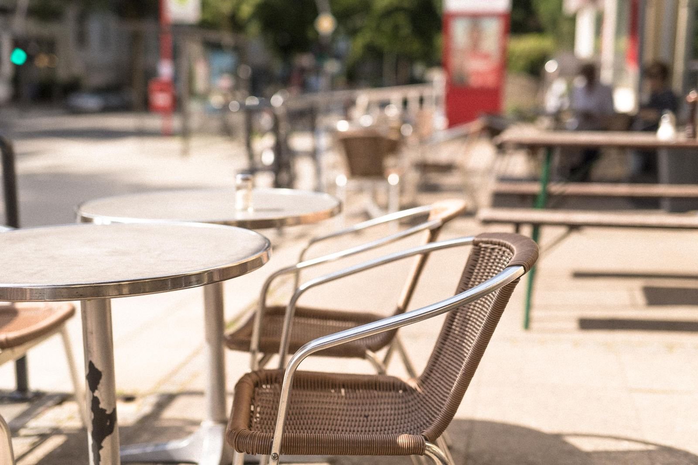
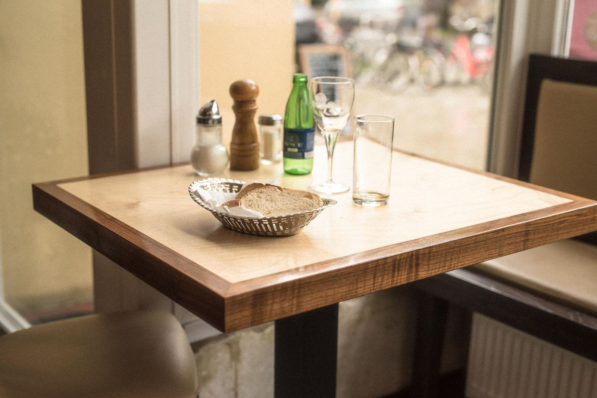
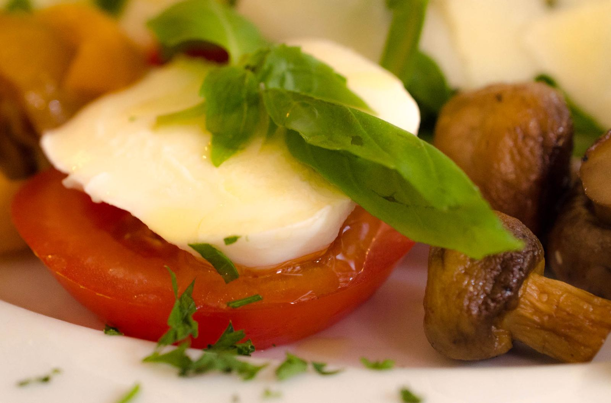
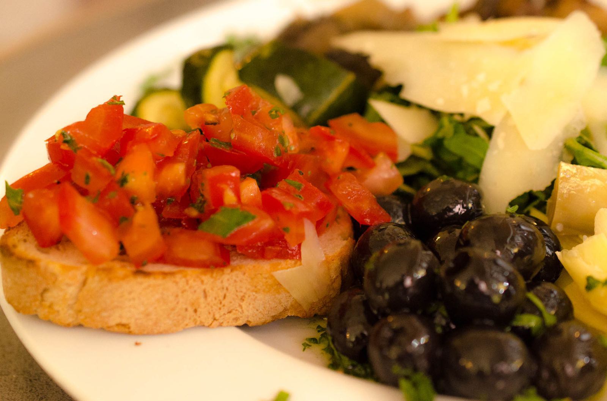
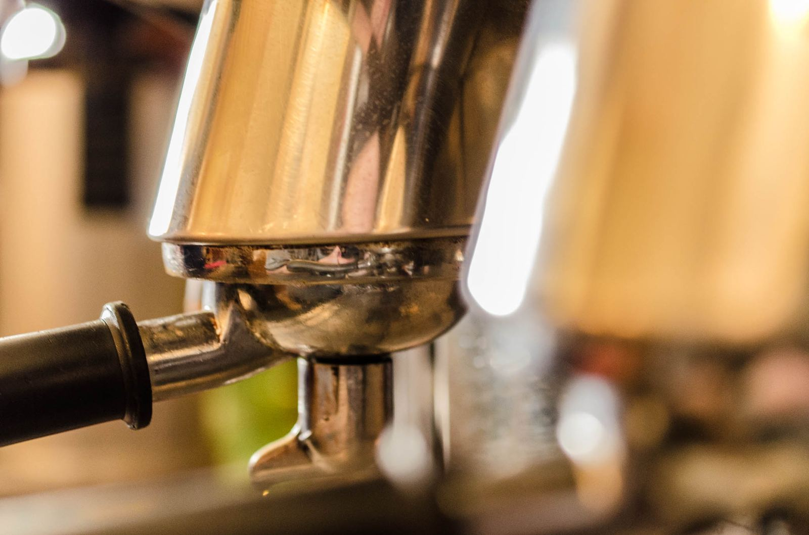

Wer uns kennt, findet uns gut
Wenig Schirm – reichlich Charme.
Ins Casa Nova zu finden, ist nicht einfach: Die Fassade gibt nichts her, kein Lockvogel, kein lautes „Da Sowieso", nur entspannte Menschen auf der zwar großen, aber unauffälligen Terrasse.
Das bedeutet andererseits, dass sich Gäste wie Umberto Eco, Wolfgang Petersen, George Clooney oder die Hamburger Medienprominenz irgendwann hierher verlaufen haben – nicht weil hier auf Prominenz gezielt wird, sondern weil echte Prominenz unauffällig leben will, wo Hamburg besonders schön ist: auf der Uhlenhorst, in Alsternähe.
Im Casa Nova am Hofweg, der „Hauptstraße" dieses gediegenen, urbanen Quartiers, ist man unter sich. Gäste, die gesehen werden oder „auf wichtig ansitzen" wollen, fühlen sich anderswo wohler.





Charme statt Chichi
Auf die üblichen Versatzstücke aus der Deko-Kiste haben die Calabrettas leichten Herzens verzichtet. Kein Pseudo-Chic, kein aufgesetztes Styling, nichts von alledem, was „beim Italiener" schon mal aufstößt, wie der notorische Grappa aufs Haus. Stattdessen ein Mobiliar mit Patina, dem man ansieht, wie lange und wofür es gut war.
Dafür verraten die Fresken in den hohen Räumen Stil und Geschmack.
„Ich kam, sah und kochte."
Genau genommen war es Mamma Sara, die sich 1997 auf den ersten Blick in den äußerlich unscheinbaren Laden am Hofweg verliebte. Sie beschloss zu bleiben, um hier fortan das zu tun, was sie am liebsten tat: tolles Eis machen, wunderbar italienisch kochen, köstlich backen und liebe Gäste bewirten.
Aus der Begeisterung und mit tatkräftiger Unterstützung von Sohn Roberto, der bis heute den Laden schmeißt, ist etwas sehr Spezielles, Familiäres entstanden: Geschmack auf der ganzen Linie, anspruchsvoll aber nicht abgehoben. Genau wie der Gästemix, der es sich mit Kind und Kegel schmecken lässt und den Begriff „Eisbistrorant" auf den Punkt bringt.
Das Casa Nova kann man auch für formlos-fröhliche Anlässe aller Art geschlossen buchen. Catering außer Haus nach Absprache gibt es natürlich auch.
Wer zu mehreren kommen möchte, um es sich dann etwas länger gut gehen zu lassen, sollte sicherheitshalber reservieren.
Alla Calabretta. Alla Calabrese.
„Alla Calabrese" bedeutet für Italiener: scharf. Wer schon einmal durch das Bergland zwischen zwei Meeren im Süden Italiens gefahren ist, dem werden die feuerroten Bündel Peperoncini aufgefallen sein, die zum Trocknen aufgehängt die Fassaden der Dörfer zieren.
In Wirklichkeit ist die kalabrische Küche vielfältiger als ihr Ruf, allerdings eher handfest als raffiniert. Entlang dieser Geschmackslinie und nach Originalrezepten wird im Casa Nova mit besten, frischen Zutaten gekocht. Auch wenn Signora Calabretta nicht mehr leibhaftig in der Küche steht – ihre Rezepte und Regeln sind Gesetz. Ihre Pizza gilt unter Kennern als die beste nördlich der Alpen.
Man kann sich nach der Tages- oder Wochenkarte richten. Man kann aber auch – wie in allen bodenständigen Trattorien in Italien – auf die Empfehlung der Mama vertrauen, auch wenn sie auf der Karte steht.